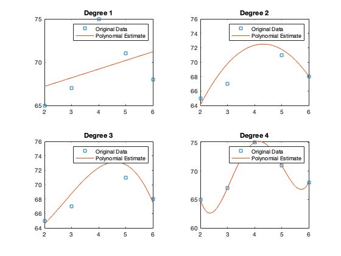

Contents
Q1
x=2:6;
y=[65 67 75 71 68];
Polydegrees = 1:4;
coefficientVCTR = cell(1, length(Polydegrees));
polynomial = cell(1, length(Polydegrees));
for i = 1:length(Polydegrees)
coefficientVCTR{i} = polyfit(x, y, Polydegrees(i));
polynomial{i} = poly2sym(coefficientVCTR{i});
disp(['Degree ' num2str(Polydegrees(i))])
polynomial{i}
coefficientVCTR{i}
end
tiledlayout(2, 2);
for i = 1:length(Polydegrees)
nexttile;
xRange = linspace(min(x), max(x), 100);
degree = Polydegrees(i);
yEstimate = polyval(coefficientVCTR{i}, xRange);
plot(x, y, 's', xRange, yEstimate);
title(['Degree ' num2str(degree)]);
legend('Original Data', 'Polynomial Estimate');
yPredicted = polyval(coefficientVCTR{i}, x);
mse = sum((y - yPredicted).^2)./length(y);
disp(['Degree ' num2str(degree) ' MSE = ' num2str(mse)]);
end
Degree 1
ans =
x + 326/5
ans =
1.0000 65.2000
Degree 2
ans =
(95*x)/7 - (11*x^2)/7 + 216/5
ans =
-1.5714 13.5714 43.2000
Degree 3
ans =
- (5*x^3)/12 + (965057063007985*x^2)/281474976710656 - (1410725776133255*x)/281474976710656 + 321/5
ans =
-0.4167 3.4286 -5.0119 64.2000
Degree 4
ans =
(5817149518687327*x^4)/4503599627370496 - (370901922436467*x^3)/17592186044416 + (2141115643155989*x^2)/17592186044416 - (2550133968688739*x)/8796093022208 + 2691604464795927/8796093022208
ans =
1.2917 -21.0833 121.7083 -289.9167 306.0000
Degree 1 MSE = 10.16
Degree 2 MSE = 3.2457
Degree 3 MSE = 2.7457
Degree 4 MSE = 1.2572e-24

Q2
disp('Q2: ')
syms x y;
eq_1 =(x + 2)^2 + y^2 ==30;
eq_2 =x + 4*y + 2*y^2 ==5;
sol = solve([eq_1, eq_2], [x, y]);
disp('x symbolic solutions: ')
disp(sol.x)
disp('y symbolic solutions: ')
disp(sol.y)
doublesolutions = double(struct2array(sol));
xsols=doublesolutions(:,1)
ysols=doublesolutions(:,2)
nmbrOfSols=length(xsols)
for i = 1:4
x=xsols(i);
y=ysols(i);
syms x y
eq_1_2_check = [subs((x + 2)^2 + y^2,[x y], [xsols(i), ysols(i)]), subs(x + 4*y + 2*y^2,[x y], [xsols(i), ysols(i)])]
eqCheck_Double = double(eq_1_2_check)
end
figure;
fimplicit(eq_1, [-8, 8, -8, 8], 'r--');
hold on;
fimplicit(eq_2, [-8, 8, -8, 8], 'b-');
stem(doublesolutions(:,1), doublesolutions(:,2), 'fill');
ylabel('y');
xlabel('x');
title('Plot of Symbolic Equations');
legend('Equation 1', 'Equation 2', 'Solutions');
Q2:
x symbolic solutions:
5 - 4*root(z^4 + 4*z^3 - (11*z^2)/4 - 14*z + 19/4, z, 1) - 2*root(z^4 + 4*z^3 - (11*z^2)/4 - 14*z + 19/4, z, 1)^2
5 - 4*root(z^4 + 4*z^3 - (11*z^2)/4 - 14*z + 19/4, z, 2) - 2*root(z^4 + 4*z^3 - (11*z^2)/4 - 14*z + 19/4, z, 2)^2
5 - 4*root(z^4 + 4*z^3 - (11*z^2)/4 - 14*z + 19/4, z, 3) - 2*root(z^4 + 4*z^3 - (11*z^2)/4 - 14*z + 19/4, z, 3)^2
5 - 4*root(z^4 + 4*z^3 - (11*z^2)/4 - 14*z + 19/4, z, 4) - 2*root(z^4 + 4*z^3 - (11*z^2)/4 - 14*z + 19/4, z, 4)^2
y symbolic solutions:
root(z^4 + 4*z^3 - (11*z^2)/4 - 14*z + 19/4, z, 1)
root(z^4 + 4*z^3 - (11*z^2)/4 - 14*z + 19/4, z, 2)
root(z^4 + 4*z^3 - (11*z^2)/4 - 14*z + 19/4, z, 3)
root(z^4 + 4*z^3 - (11*z^2)/4 - 14*z + 19/4, z, 4)
xsols =
3.4673
-7.2176
2.9085
-6.1582
ysols =
0.3290
1.6662
-2.4303
-3.5650
nmbrOfSols =
4
eq_1_2_check =
[9735556609752801943115447522288281/324518553658426726783156020576256, 811296384146066842482518741325913/162259276829213363391578010288128]
eqCheck_Double =
30 5
eq_1_2_check =
[152118072027387538889651038727245/5070602400912917605986812821504, 12676506002282296341697487670505/2535301200456458802993406410752]
eqCheck_Double =
30.0000 5.0000
eq_1_2_check =
[38029518006846880642139333701861/1267650600228229401496703205376, 792281625142643441101611795849/158456325028528675187087900672]
eqCheck_Double =
30 5
eq_1_2_check =
[9507379501711721337129966787205/316912650057057350374175801344, 792281625142643662201592384289/158456325028528675187087900672]
eqCheck_Double =
30.0000 5.0000